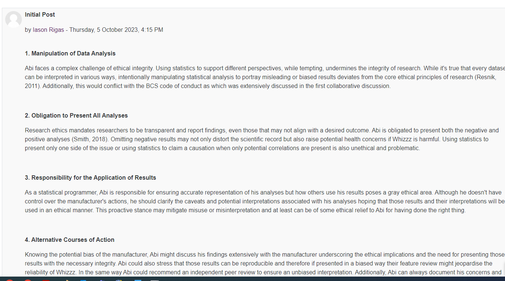

In unit 7 we looked into validity, generalisability and reliability
in research. Reliability
considers whether the results gathered in a research are reproducable
and this depends on the accuracy of the research techniques
used.Validity in general considers if the research achieved its purpose
and whether the findings have been interpreted accurately.
Generalisability considers whether the results are applicable to other
situations or in other contexts.
Formative Activities
The collaborative discussion in the forum has been started and I posted my initial analysis on the topic
